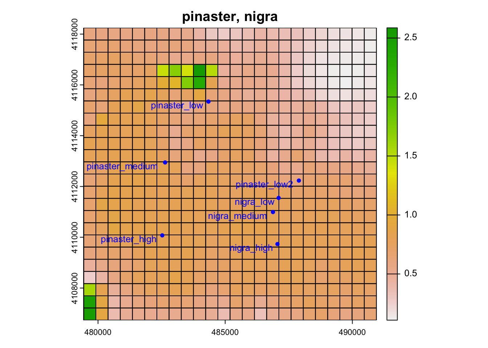
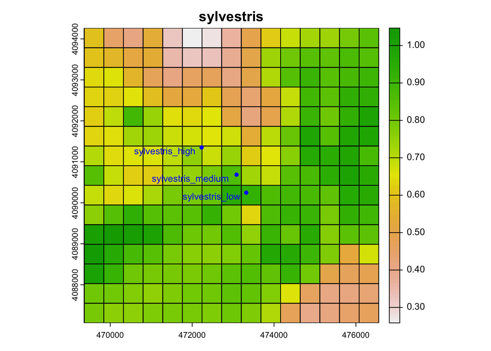
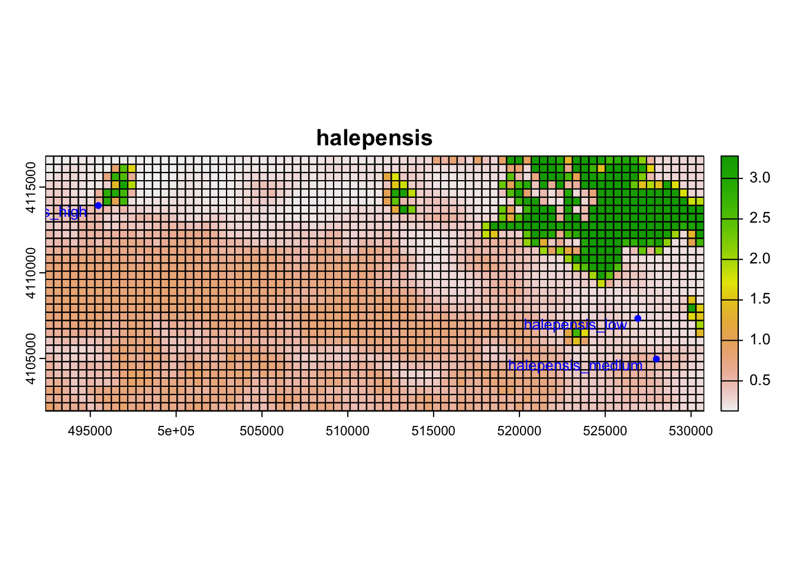

Last updated: 2024-01-15
Checks: 7 0
Knit directory:
adaptamed_dendroanalysis/
This reproducible R Markdown analysis was created with workflowr (version 1.7.1). The Checks tab describes the reproducibility checks that were applied when the results were created. The Past versions tab lists the development history.
Great! Since the R Markdown file has been committed to the Git repository, you know the exact version of the code that produced these results.
Great job! The global environment was empty. Objects defined in the global environment can affect the analysis in your R Markdown file in unknown ways. For reproduciblity it’s best to always run the code in an empty environment.
The command set.seed(20220407) was run prior to running the code in the R Markdown file.
Setting a seed ensures that any results that rely on randomness, e.g.
subsampling or permutations, are reproducible.
Great job! Recording the operating system, R version, and package versions is critical for reproducibility.
Nice! There were no cached chunks for this analysis, so you can be confident that you successfully produced the results during this run.
Great job! Using relative paths to the files within your workflowr project makes it easier to run your code on other machines.
Great! You are using Git for version control. Tracking code development and connecting the code version to the results is critical for reproducibility.
The results in this page were generated with repository version fc1948c. See the Past versions tab to see a history of the changes made to the R Markdown and HTML files.
Note that you need to be careful to ensure that all relevant files for the
analysis have been committed to Git prior to generating the results (you can
use wflow_publish or wflow_git_commit). workflowr only
checks the R Markdown file, but you know if there are other scripts or data
files that it depends on. Below is the status of the Git repository when the
results were generated:
Ignored files:
Ignored: .DS_Store
Ignored: .Rhistory
Ignored: .Rproj.user/
Ignored: data/.DS_Store
Ignored: data/geoinfo/.DS_Store
Ignored: data/raw/.DS_Store
Untracked files:
Untracked: data/dendroadaptamed_iv_mod13q1_2024.csv
Untracked: data/dendroadaptamed_ndvi_landsat_harmonized.csv
Untracked: data/distance_among_sites.csv
Untracked: data/distance_among_sites_minimum.csv
Untracked: data/geoinfo/Archive.zip
Untracked: data/raw/MOD17A3HGF.A2021001.h17v05.061.2022020140519.hdf
Untracked: data/topo_sites.csv
Untracked: scripts/prepare_FeatureCollection_gee.R
Unstaged changes:
Modified: data/dendroadaptamed_npp_mod17a3_yearly.csv
Note that any generated files, e.g. HTML, png, CSS, etc., are not included in this status report because it is ok for generated content to have uncommitted changes.
These are the previous versions of the repository in which changes were made
to the R Markdown (analysis/site_topography_prepare.Rmd) and HTML (docs/site_topography_prepare.html)
files. If you’ve configured a remote Git repository (see
?wflow_git_remote), click on the hyperlinks in the table below to
view the files as they were in that past version.
| File | Version | Author | Date | Message |
|---|---|---|---|---|
| Rmd | fc1948c | ajpelu | 2024-01-15 | wflow_publish("analysis/site_topography_prepare.Rmd") |
library(tidyverse)
library(sf)
library(terra)
library(DT)# read geoinfo to get site codes
geo <- st_read("data/geoinfo/geoinfo_dendro_adaptamed_pinus.shp", quiet=TRUE)
geo <- vect(geo)
geodf <- geo |> as.data.frame() |>
rownames_to_column(var = "ID") |>
mutate(ID = as.numeric(ID)) |>
dplyr::select(ID, site_code, sp_code, elev_code)# read mde high precission
demsn <- rast("/Volumes/Backup/CARTOTECA_V2/MDEs/mde_sn_area_influencia.asc")
# Set projection
crs(demsn) <- "+proj=utm +zone=30 +ellps=WGS84 +datum=WGS84 +units=m +no_defs"
# Get slope and aspect
slopesn10 <- terrain(demsn, v="slope", unit = 'degrees')
aspectsn10 <- terrain(demsn, v="aspect", unit = 'degrees')
elev <- terra::extract(demsn, geo, xy = TRUE)
slope <- terra::extract(slopesn10, geo, xy = TRUE)
aspect <- terra::extract(aspectsn10, geo, xy = TRUE)
topo <- geodf |>
inner_join(elev) |>
inner_join(slope) |>
inner_join(aspect) |>
rename(elev = mde_sn_area_influencia) |>
dplyr::select(-x,-y) |>
mutate(elev = round(elev),
slope = round(slope, 1),
aspect = round(aspect, 1),
aspectFactor = cut(aspect,
breaks= c(0,22.5, 67.5, 112.5, 157.5, 202.5, 247.5, 292.5, 337.5, 359.5), labels = c("N", "NE", "E", "SE", "S", "SW", "W", "NW","N")))
write_csv(topo, file = "data/topo_sites.csv")topo <- read_csv("data/topo_sites.csv")
topo |> DT::datatable(options =
list(
autoWidth = TRUE,
pageLength = 15),
filter = list(position = 'top', clear = FALSE)
)geopinos <- st_read("data/geoinfo/geoinfo_dendro_adaptamed_pinus.shp", quiet=TRUE)
# We have to get the same ID name as the st_distance ouput
points <- geodf$ID
# Compute the distance matrix
point_distances <- st_distance(geopinos)
# Create an empty dataframe to store the results
distance_df <- data.frame(point1 = character(),
point2 = character(),
distance = numeric())
# Loop through the points and populate the dataframe
for (point1 in points) {
for (point2 in points) {
distance <- point_distances[point1, point2]
distance_df <- rbind(distance_df,
data.frame(point1 = point1,
point2 = point2,
distance = distance))
}
}
write_csv(distance_df, "data/distance_among_sites.csv")g <- geodf |> dplyr::select(ID, site_code)
distance_df |>
mutate(distance = round(distance, 0)) |>
left_join(g, by = c("point1" = "ID")) |>
rename(point1_code = site_code) |>
left_join(g, by = c("point2" = "ID")) |>
rename(point2_code = site_code) |>
relocate(point1_code, point2_code) |>
dplyr::select(-point1, -point2) |>
DT::datatable(options =
list(
autoWidth = TRUE,
pageLength = 13),
filter = list(position = 'top', clear = FALSE)
)min_distances <- distance_df |>
mutate(distance = as.numeric(distance)) |>
filter(distance > 0) |>
group_by(point1) |>
slice_min(order_by = distance, n = 1) |>
ungroup()
min_distances_codes <- min_distances |>
left_join(g, by = c("point1" = "ID")) |>
rename(point1_code = site_code) |>
left_join(g, by = c("point2" = "ID")) |>
rename(point2_code = site_code)
write_csv(min_distances_codes, "data/distance_among_sites_minimum.csv")min_distances_codes |>
mutate(distance = round(distance, 0)) |>
relocate(point1_code, point2_code) |>
dplyr::select(-point1, -point2) |>
DT::datatable(options =
list(
autoWidth = TRUE,
pageLength = 13),
filter = list(position = 'top', clear = FALSE)
)# Read the hdf file
m <- terra::rast("data/raw/MOD17A3HGF.A2021001.h17v05.061.2022020140519.hdf") |>
project("EPSG:23030")
# select only a layer
npp <- m$Npp_500m
# function to get bbox by sp
bbox_sp <- function(shapefile, sp) {
out <- shapefile |>
filter(sp_code %in% sp) |>
st_transform(crs = 23030) |>
st_bbox() |>
st_as_sfc() |>
st_buffer(3000, joinStyle = "MITRE", mitreLimit = 500)
return(out)
}
# compute bbox
nig <- bbox_sp(geopinos, c("nigra", "pinaster"))
syl <- bbox_sp(geopinos, c("sylvestris"))
hal <- bbox_sp(geopinos, c("halepensis"))
# for annotations of plots
geopinos_t <- st_transform(geopinos, 23030) |>
unite("sp_elev", c(sp_code, elev_code), remove = FALSE)
geopinos_coords <- st_coordinates(geopinos_t)# nigra + pinaster
ras_nig <- terra::crop(npp, nig)
pols_nig <- ras_nig |> terra::as.polygons(aggregate = FALSE)
plot(ras_nig, main = "pinaster, nigra")
plot(pols_nig, add=TRUE)
plot(st_geometry(geopinos_t), add = TRUE, pch = 20, col = "blue")
text(geopinos_coords[, "X"], geopinos_coords[, "Y"], labels = geopinos_t$sp_elev, col = "blue", cex = 0.8, adj = c(1.1, 1))
# sylvestris
ras_syl <- terra::crop(npp, syl)
pols_syl <- ras_syl |> terra::as.polygons(aggregate = FALSE)
plot(ras_syl, main = "sylvestris")
plot(pols_syl, add=TRUE)
plot(st_geometry(geopinos_t), add = TRUE, pch = 20, col = "blue")
text(geopinos_coords[, "X"], geopinos_coords[, "Y"], labels = geopinos_t$sp_elev, col = "blue", cex = 0.8, adj = c(1.1, 1))
# halepensis
ras_hal <- terra::crop(npp, hal)
pols_hal <- ras_hal |> terra::as.polygons(aggregate = FALSE)
plot(ras_hal, main = "halepensis")
plot(pols_hal, add=TRUE)
plot(st_geometry(geopinos_t), add = TRUE, pch = 20, col = "blue")
text(geopinos_coords[, "X"], geopinos_coords[, "Y"], labels = geopinos_t$sp_elev, col = "blue", cex = 0.8, adj = c(1.1, 1))
sessionInfo()R version 4.2.3 (2023-03-15)
Platform: x86_64-apple-darwin17.0 (64-bit)
Running under: macOS Big Sur ... 10.16
Matrix products: default
BLAS: /Library/Frameworks/R.framework/Versions/4.2/Resources/lib/libRblas.0.dylib
LAPACK: /Library/Frameworks/R.framework/Versions/4.2/Resources/lib/libRlapack.dylib
locale:
[1] en_US.UTF-8/en_US.UTF-8/en_US.UTF-8/C/en_US.UTF-8/en_US.UTF-8
attached base packages:
[1] stats graphics grDevices utils datasets methods base
other attached packages:
[1] DT_0.31 terra_1.7-65 sf_1.0-15 lubridate_1.9.3
[5] forcats_1.0.0 stringr_1.5.1 dplyr_1.1.4 purrr_1.0.2
[9] readr_2.1.4 tidyr_1.3.0 tibble_3.2.1 ggplot2_3.4.4
[13] tidyverse_2.0.0 workflowr_1.7.1
loaded via a namespace (and not attached):
[1] Rcpp_1.0.11 getPass_0.2-4 class_7.3-22 ps_1.7.5
[5] rprojroot_2.0.4 digest_0.6.33 utf8_1.2.4 R6_2.5.1
[9] evaluate_0.23 e1071_1.7-14 highr_0.10 httr_1.4.7
[13] pillar_1.9.0 rlang_1.1.2 rstudioapi_0.15.0 whisker_0.4.1
[17] callr_3.7.3 jquerylib_0.1.4 rmarkdown_2.25 htmlwidgets_1.6.4
[21] bit_4.0.5 munsell_0.5.0 proxy_0.4-27 compiler_4.2.3
[25] httpuv_1.6.13 xfun_0.41 pkgconfig_2.0.3 htmltools_0.5.7
[29] tidyselect_1.2.0 bookdown_0.37 codetools_0.2-19 fansi_1.0.6
[33] crayon_1.5.2 tzdb_0.4.0 withr_2.5.2 later_1.3.2
[37] wk_0.9.1 grid_4.2.3 jsonlite_1.8.8 gtable_0.3.4
[41] lifecycle_1.0.4 DBI_1.2.0 git2r_0.33.0 magrittr_2.0.3
[45] units_0.8-5 scales_1.3.0 KernSmooth_2.23-22 vroom_1.6.5
[49] cli_3.6.2 stringi_1.8.3 cachem_1.0.8 fs_1.6.3
[53] promises_1.2.1 bslib_0.6.1 ellipsis_0.3.2 generics_0.1.3
[57] vctrs_0.6.5 s2_1.1.6 tools_4.2.3 bit64_4.0.5
[61] glue_1.6.2 crosstalk_1.2.1 hms_1.1.3 parallel_4.2.3
[65] processx_3.8.3 fastmap_1.1.1 yaml_2.3.8 timechange_0.2.0
[69] colorspace_2.1-0 classInt_0.4-10 knitr_1.45 sass_0.4.8